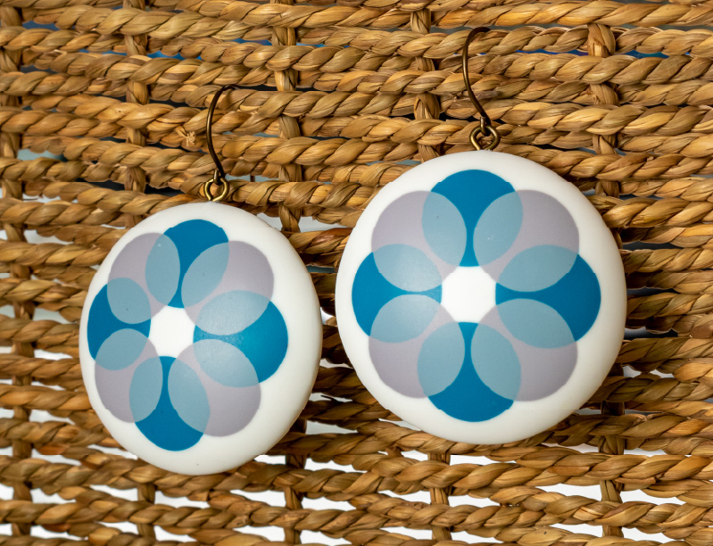
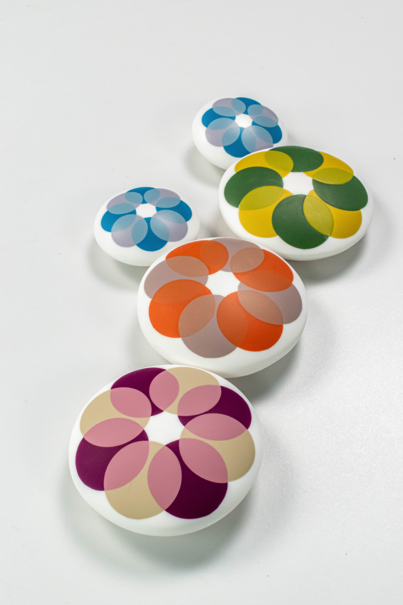
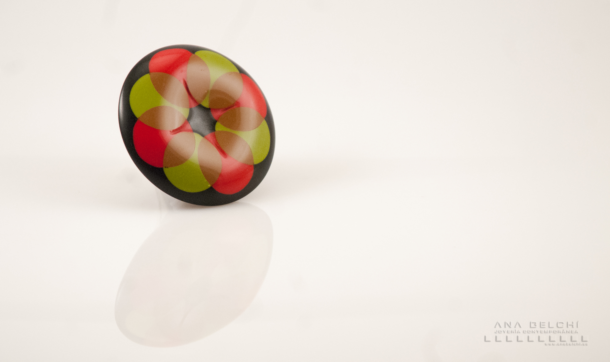

Tranparencias 2.0
3 de diciembre

Todos los niveles son bienvenidos
En este taller nos adentraremos en la magia de la transparencia, explorando cómo el color puede sugerir lo que se esconde detrás a través de delicadas superposiciones.

Tomaremos como punto de partida la belleza de las flores para transformarla en un lenguaje más contemporáneo, donde las formas se simplifican y el color se convierte en protagonista.
A lo largo de la experiencia aprenderás a encontrar mezclas equilibradas, a jugar con la intensidad y la sutileza, y a aplicar texturas que aporten matices y profundidad a cada pieza. Trabajaremos con dos colores para descubrir cómo dialogan entre sí y cómo generan nuevas sensaciones al superponerse.

Es un curso muy práctico y guiado, pensado para que disfrutes del proceso mientras desarrollas tu propia interpretación de la transparencia con confianza y sensibilidad.
La duración de este taller es de 7 horas aproximadamente.
